1 / 1
A small studio that ships finished products in weeks, not months. AI agents, Telegram bots, websites, business automation — what large teams deliver in six months, we deliver in 2–4 weeks. Speed comes from a properly set up AI development process. Experience comes from the fact that every person on the team has shipped their own product.
No hiring cycle, no onboarding, no long-term commitment. You bring a scoped problem — we deliver a working product, documented for handover.
Claude is the core of our workflow. One engineer with the right AI flow ships what used to take a team of 5.
Each of us builds and runs a product in our own ecosystem — so we treat client work with the same accountability.
Speed comes from vibe-coding, but underneath sits classical full-stack engineering — we understand databases, load behavior, security, the code itself. Two-environment CI/CD, healthchecks, rollback playbooks, documented handover. Not prototypes — production-grade products that survive when the user count grows.
System design, AI pipelines, infra, billing, mobile builds, SEO, content automation — we cover the whole stack.
From AI agents and Telegram products to websites and business automation. We take a project end-to-end — from a 30-minute call to a deployed product — or step in on a specific scope to reinforce your team.
Our most-requested directions. Final price depends on scope.
AI agents, RAG, LLM chatbots, AI-driven process automation
Smart contracts, NFT infrastructure, multichain integrations, token launches
Landing pages, websites, web apps, SaaS dashboards, admin panels
Bots with logic, payments, CRM integration, Mini Apps
Connecting services via API, CRM, notifications, CI/CD, cron jobs
Native iOS & Android via Capacitor, single codebase, store submissions
Final price is set after a free discovery call — it depends on scope and complexity.
A mix of confidential client work (under NDA) and products from our own Web3 ecosystem. Each case is real, in production, with measurable outcomes.
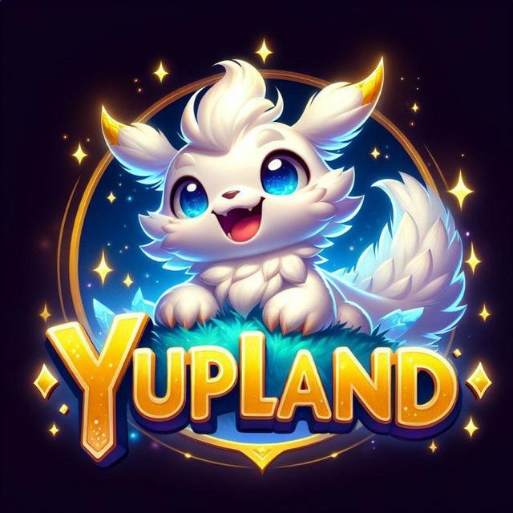
A self-built, multi-chain Web3 ecosystem on NEAR — 15+ products linked by one economy and 21 tokens, where real users have lived, traded and crafted for two years across two market cycles.
Web3 games die with the market — in a bear, NFTs rot in wallets, communities scatter and metrics are bot-inflated. The goal: an ecosystem whose on-chain activity doesn't depend on price, driven by real wallets, not bots.
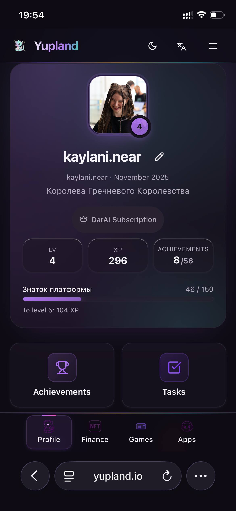
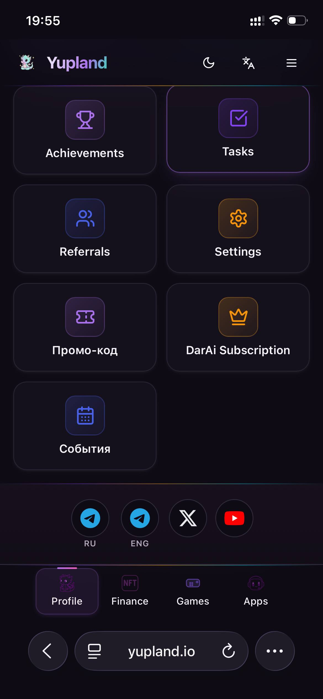
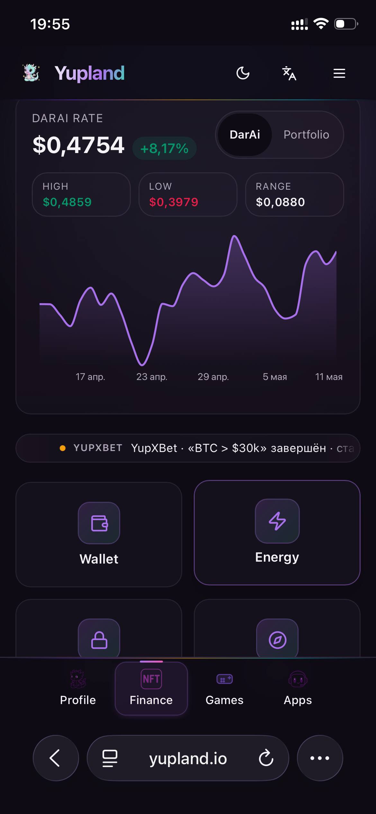
The Reputation Game — an antifragile loop of trade → craft → burn → win that gets stronger under pressure. Cross-chain crafting (Alchemy Lab), a burn wallet (Duplo), mass NFT distribution (Sender — 120 NFTs per tx) and AI products, all live on NEAR + TON on custom indexers and smart contracts.
Cross-chain NFT crafting across NEAR + TON — 29K+ crafts, 283 recipes. Burning solves inflation; recipes drive retention.
Mass multi-chain distribution at 120 NFTs per transaction, past the NEAR throughput limit — no analogs on the market.
The flagship AI product: personal songs from a natal chart across web, Telegram, VK, iOS & Android in 5 languages.
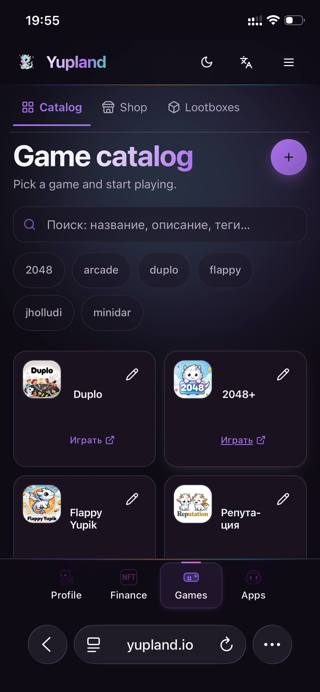
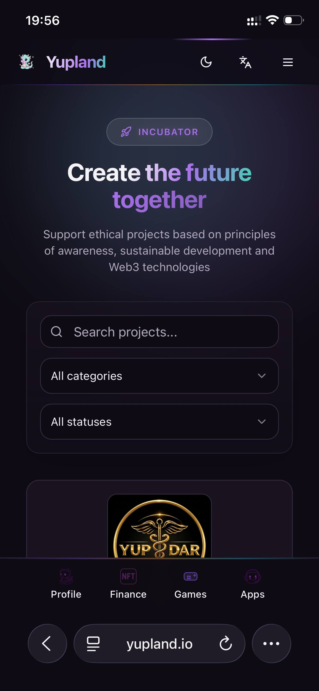
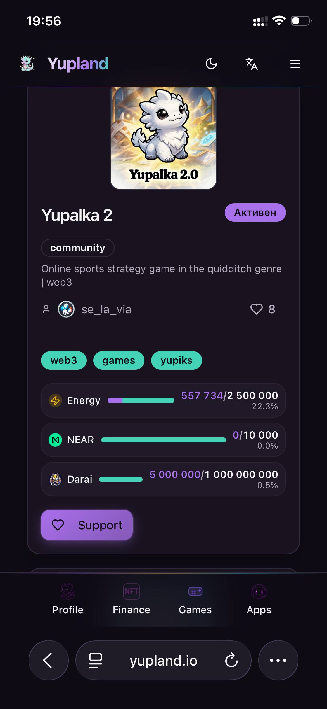
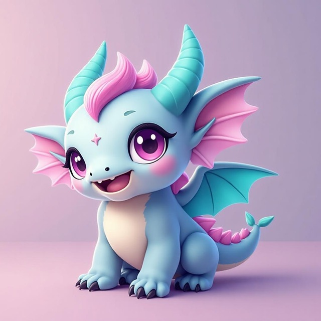
YupLand Portal is the navigation layer of the Yupland ecosystem — one app, web + Telegram Mini App, that bundles a custom CMS, DEX, incubator, wiki, gamification layer (levels / achievements / quests / loot boxes / NFT staking), YupPay, prediction market (Polymarket-style), YupDrop, subscriptions, referrals, social graph and a Telegram notification engine. Built solo by one engineer.
The Yupland ecosystem has 15+ products and 21 tokens spread across NEAR + TON. Users needed one place to navigate the whole world — wallet, balances, staking, games, marketplace, governance — without bouncing between apps. The portal also had to host games and services built by the community and incubator projects, not just by the studio.
A single full-stack app — web + Telegram Mini App on one codebase — wrapping the entire YupLand world. Custom CMS, DEX trading every ecosystem token pair (13 NEAR FTs + 8 TON jettons), incubator with no-strings community funding, gamification layer (levels, achievements, quests, daily loot boxes, NFT staking), YupPay, YupDrop, Polymarket-style prediction market, subscriptions in Darai, in-portal transactions, friends graph, events calendar, promo codes, reward pool and a Telegram notification engine for users and admins. Vibe-coded end-to-end.
Connect a wallet, see your Yupland tokens live on-chain, watch the Darai chart. Built-in DEX trades every ecosystem pair across 13 NEAR FTs and 8 TON jettons — from MED to Darai to bees.
Levels, achievements, quests and the daily Duplo loot loop — ~2M boxes opened per month (rewards batched into single transactions to save NEAR gas). NFT staking earns Energy, spent on the same loot loop.
10+ mini-games in one portal — Flappy, 2048+, Reputation Calculator, YupLottery, YupLink, feeding checkers, plus deep links into YupSoul, YupDar, Sender and KeksVPN. Built by the studio, by the community and via the incubator.
Project applies → admin approves → community funds it freely in NEAR / USDT / Energy / Darai. 9 projects live. Some become standalone ecosystem products.
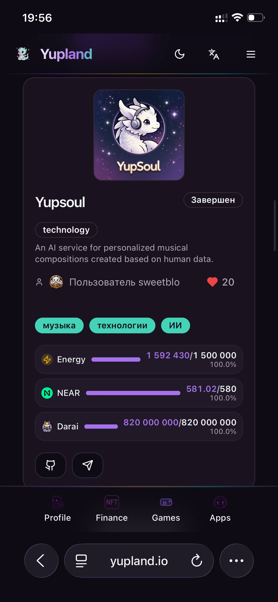
An end-to-end AI music platform delivered across three surfaces — a Telegram Mini App and native iOS & Android apps — all on one unified backend.
Generate music reliably at scale and accept payments in a regulated market — all from a single codebase that ships to web and both app stores.
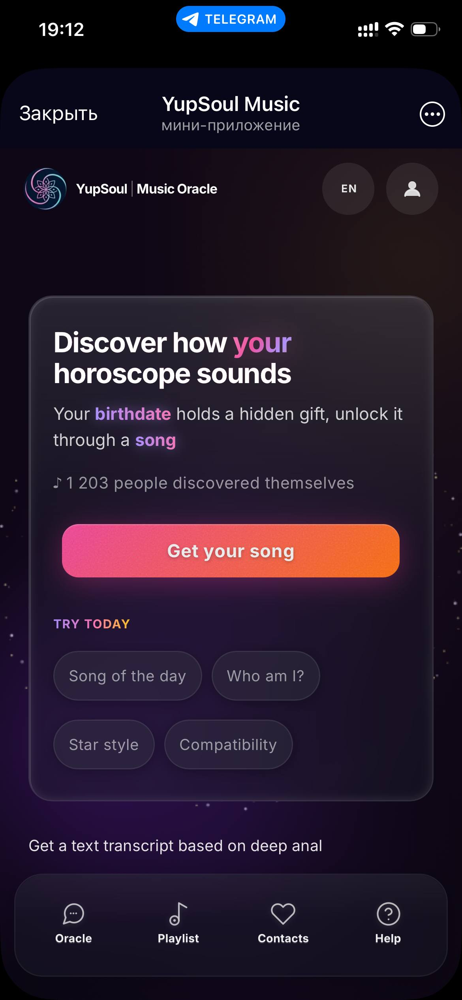
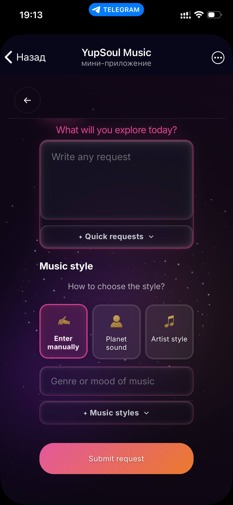
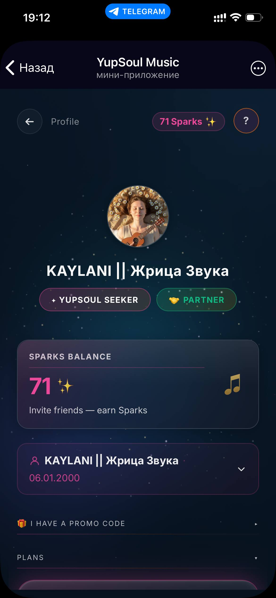
A multi-stage AI pipeline with retry/failover, one backend powering all three clients, three payment integrations including card acquiring in a regulated market, and two-environment CI/CD with Sentry monitoring.
A complete AI-powered sales funnel for an online education business — from landing pages to a RAG agent that answers in the founder's own voice.
Turn a founder's huge content library into an always-on sales agent that genuinely sounds like them — wired into the existing CRM and protected from referral fraud.
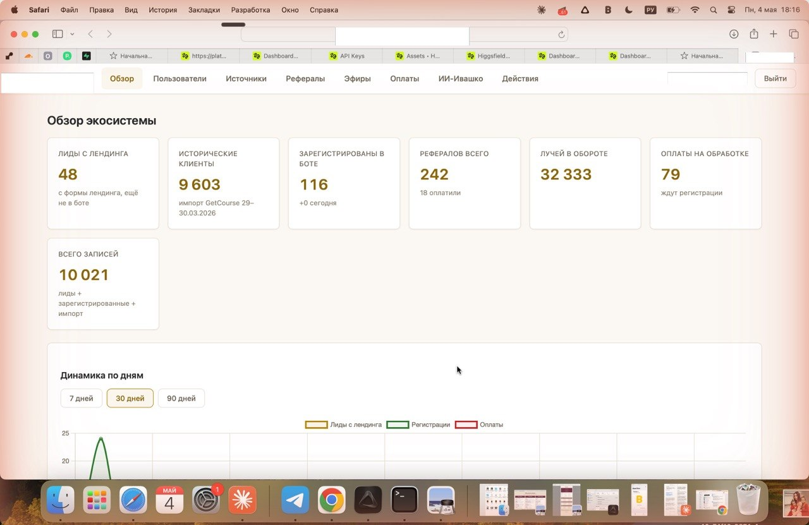
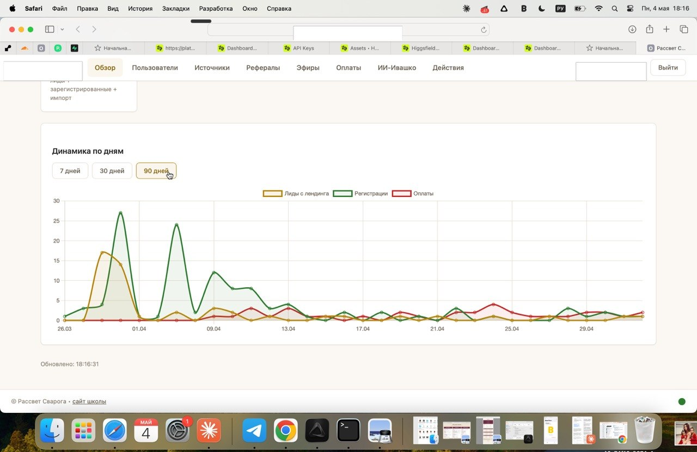
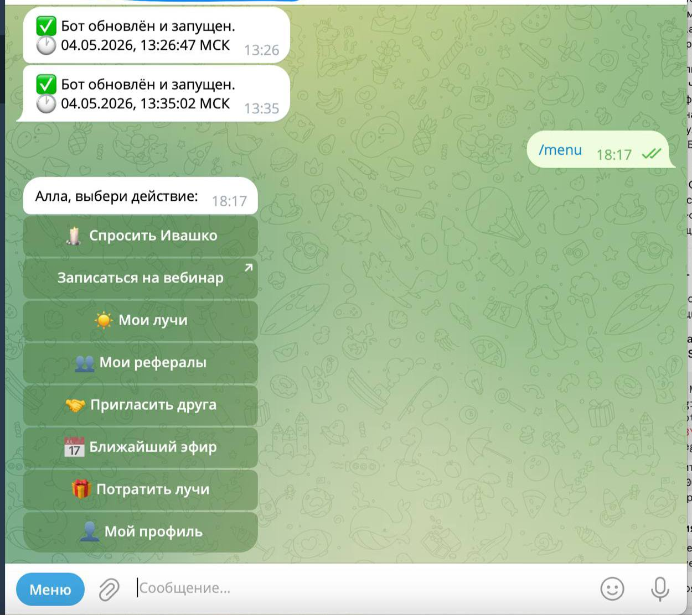
Two landing pages, a multi-step Telegram onboarding bot, a RAG agent trained on the full content library, GetCourse CRM integration, an anti-fraud referral system and an admin dashboard — delivered in 6 weeks.
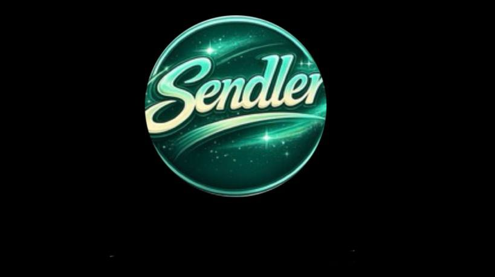
NFT-Sender is the multichain NFT infrastructure powering bulk distribution, marketplace, on-chain auctions, an explorer and a reputation game across NEAR, TON, EVM and Solana. Currently #1 on NEAR by transaction volume — 1M+ tx on a single collection, 40 collections live, 10K+ wallets in the reputation system. Built from scratch — no analogs on the market.
Mass NFT distribution on NEAR runs straight into the chain's throughput limit — a few NFTs per transaction means days to airdrop a 10K-wallet campaign. Beyond raw distribution, an NFT ecosystem also needs the layers around it: a marketplace, auctions, a wallet-level explorer, and a reason for holders to actually engage with what they own. Ideally it should reach across chains, not just one.
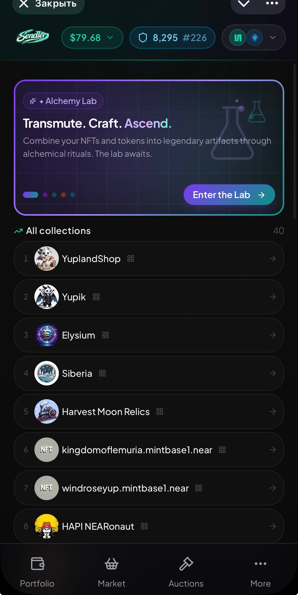
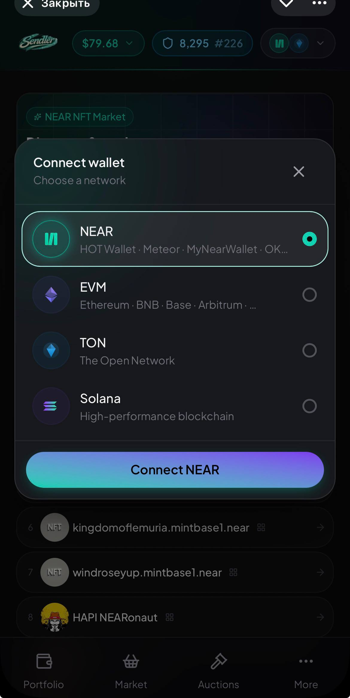
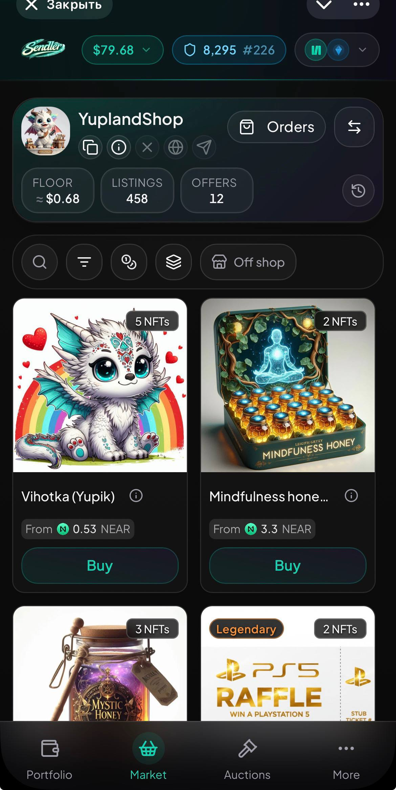
A custom infrastructure that pushes up to 120 NFTs per transaction on NEAR — a workaround for the chain's throughput limit, with no analogs on the market. Around the distribution sit a built-in marketplace and on-chain auctions, an explorer that parses 10K+ wallet addresses with full on-chain data extraction, and a reputation game where each NFT carries a positive or negative reputation coefficient and wallets compete for TOP+ and TOP- rankings. Alchemy Lab — the cross-chain crafting mechanic — plugs in here too. Cross-chain by design: NEAR, TON, EVM and Solana through one interface.
Up to 120 NFTs per transaction — a workaround for NEAR's throughput limit. A 10K-wallet campaign goes out in a few transactions, not hundreds. Automated airdrops and reward systems for collection launches.
NEAR, TON, EVM and Solana collections work through one interface. Single tooling for cross-chain airdrops, drops and partner collaborations.
Sells, Orders and on-chain auctions inside the same service. A wallet explorer parses 10K+ addresses with full on-chain data extraction — holders, NFTs and tokens, all queryable.
Each NFT carries a positive or negative reputation coefficient. Wallets compete for TOP+ and TOP- rankings. Alchemy Lab — the cross-chain crafting mechanic — plugs in right here, turning distribution into a closed-loop economy.
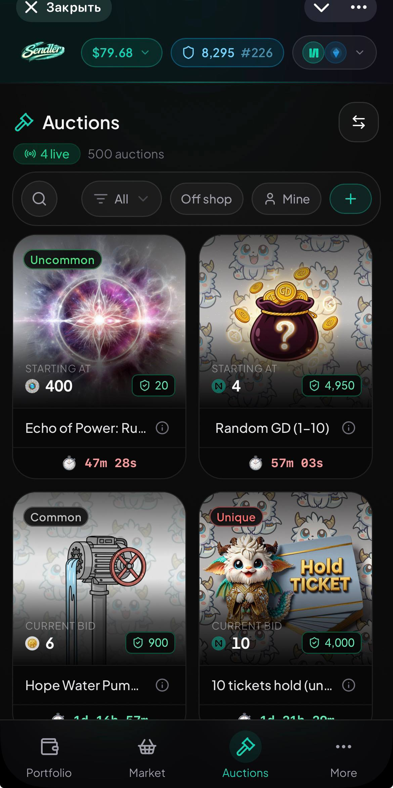
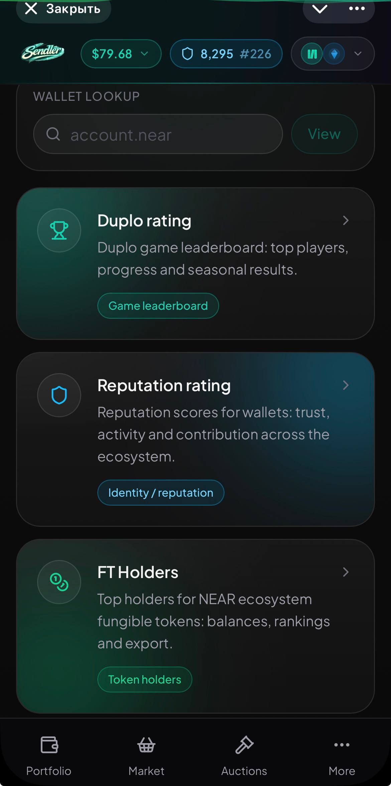
A production AI pipeline that turns a single prompt into finished video or presentation — scripts, voice, visuals, motion, music, effects, fully automated end-to-end. Fallback chains at every stage across 10+ AI providers, with a hybrid free/paid layer keeping cost predictable.
Anyone can chain two AI APIs and ship a demo. Production content generation breaks the moment any single provider rate-limits, raises prices or quietly degrades quality. The pipeline needed to survive the failure of any single provider, balance free vs paid resources for cost-efficiency, and run unattended on CI — not in a tab.
A multi-stage pipeline (script → voice → visuals → motion → music → effects → assembly) where every stage has a graceful fallback to another provider. TypeScript + Node for orchestration, Python for AI calls and asset processing, ffmpeg + Pillow for media stitching. Runs on GitHub Actions as the execution engine — every generation is a CI job, fully reproducible. 10+ AI providers behind one router.
Provider routing with automatic failover at script, voice, visuals, motion, music and effects layers — no single API can take down a generation.
Runs as GitHub Actions jobs — unattended, reproducible, observable. Every generation is a CI run with logs, artifacts and retry semantics out of the box.
Free-tier providers wherever quality survives, paid providers where it doesn't. Cost stays predictable instead of bursting on every job.
Script + voice + visuals + motion + music + effects, chained automatically into a finished video or presentation. Prompt in, file out.
10+ AI providers, fallback at every stage, runs on CI — script → voice → visuals → motion → music → effects → assembly, all from a single prompt.
YupJarvis is a no-code visual builder for LLM agents and pipelines — a drag-and-drop graph editor that chains 7 kinds of agents (LLM, Classifier, Extractor, Tool, Memory/RAG, Judge, Orchestrator), with triggers, public API, RAG over pgvector and a run journal with drill-down. Designed and built end-to-end by the studio.
Building a production-grade LLM pipeline means stitching together agent types, retry logic, vector memory, tool calls, condition routing, run logs and access control by hand for every new project. The studio needed one substrate that turns this into a graph the team can draw, version and ship — not yet another framework wrapper.
A full Next.js 15 + Supabase application with a React Flow editor (16 node types and 7 agent kinds), JMESPath-powered Mapper/Condition routing, RAG on pgvector with an embedding pipeline, public API + webhook trigger, and a run journal with metrics, limits and drilldown UI. Configs validated through Zod, strict TypeScript across the stack, 302 test assertions across 11 test files — schemas, runner, classifier routing, tool calls, memory, judge, orchestrator and API.
React Flow with 16 node types, drag-and-drop wiring, Zod-validated configs per node — designers draw the pipeline instead of writing boilerplate.
LLM, Classifier, Extractor, Tool, Memory/RAG, Judge, Orchestrator. Each one a first-class node with typed schema, retries and observability.
pgvector storage, a separate embedding pipeline (OpenAI), retrieval as its own node type. Memory and RAG share the same substrate.
Every run logged with token and duration metrics, per-project limits, drilldown UI. Webhook trigger and public REST API expose any agent to the outside world.
16 node types, 7 agent kinds, 302 test assertions — built solo end-to-end on Next.js 15 + Supabase. Strict TypeScript, zero compile errors.
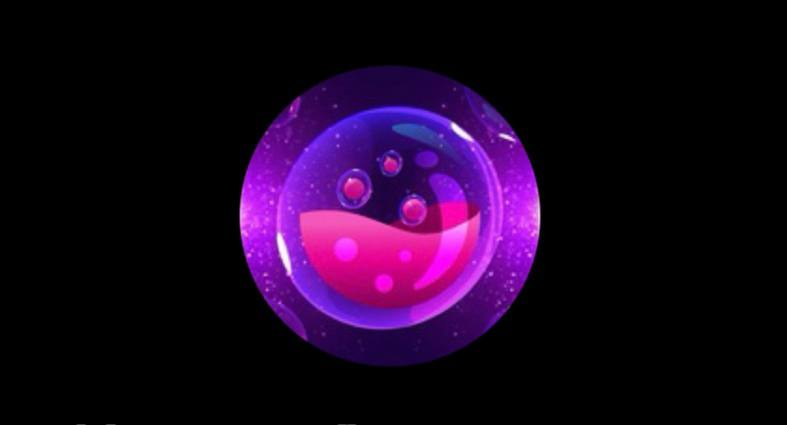
Alchemy Lab is a cross-chain NFT crafting mechanic unique on the market — players combine NFT components by recipes across NEAR and TON to mint brand-new NFTs in a closed-loop economy. Trade → craft → burn → mint, on two blockchains at once.
NFT inflation kills value: once mass-minted, collections sit in wallets with nowhere to go. The fix had to make burning attractive — a game where players want to take NFTs out of circulation — and work across two blockchains so liquidity flows from both. And it had to be easy enough for partners to drop their NFTs into the same loop without rebuilding anything.
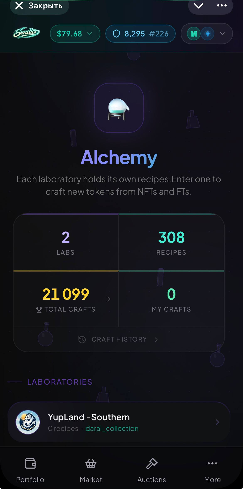
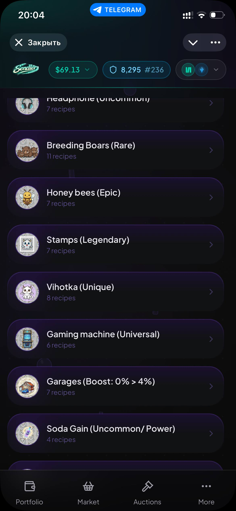
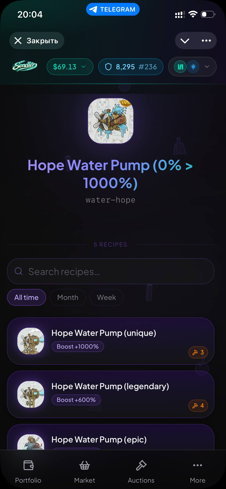
A custom recipe engine on top of NEAR + TON smart contracts and cross-chain bridge logic. Players combine NFT components by recipe to mint new NFTs — and the burned originals leave circulation forever. The same surface accepts partner NFTs, so external projects plug into the lab and get instant collab without writing their own crafting layer. 317 live recipes today, 34K+ crafts completed, TOP-2 on HOTCraft.
NEAR + TON in one closed loop. Liquidity from two blockchains feeds the same recipe library — combine components from either chain to mint new NFTs.
Players themselves take NFTs and tokens out of circulation via crafting. Mass-minted supply is removed not by penalties but by a mechanic players choose.
317 recipes ship today — from basic to rare combos and boosts. Players come back daily to chase rare results.
External projects drop their NFTs into the Lab — instant collab. The recipe engine is generic enough for any project to plug in without rebuilding crafting from scratch.
A trilingual self-discovery ecosystem (RU / EN / ES) on the 64 Daram system — Telegram Mini App + a public web landing on one codebase, with a premium daily-companion layer ARKA on top. AI-generated literary portraits (8 psychological sections per user), oracle as a card spread, compatibility, hero's journey 2.0 with cross-user Daram unlocks, shadow quests, PvP card game. Books published in EN / ES on Amazon and on Litres in RU. A scientific track in parallel — DAR-27v2 research questionnaire, scientific-article DOCX builders, application to the World Science Championship in Dubai. Built solo by the book's author with Claude Code.
Turning a published esoteric book on the 64 Darams into a living interactive product required AI capable of writing literary Russian indistinguishable from the author's voice. Off-the-shelf models produced "professional" Russian — methodical, cliché-laden, sprinkled with Latin tokens, with broken gender agreement. Declarative bans inside the prompt didn't hold. And the product had to ship as both a Telegram Mini App AND a public SEO-landing — one codebase, two surfaces.
A two-layer Russian-AI quality stack: prompt v7 with the author's ~600-word reference text baked in as a stylistic anchor, plus a programmatic postprocessor russifyText() with 60+ regex defenses against forbidden constructions (clichés, Latin, broken gender, formulaic openings). Provider routing — DeepSeek-V3 primary (~$0.0024 per message), Groq Llama 3.3 70B as automatic fallback, Llama 3.1 8B as second fallback. response_format: json_object guarantees parseable output for 8-section portraits. Yandex Speller post-pass with a protected glossary. Same backend serves both the Mini App and the yupdar.com landing — split only at the HTML entrypoint level. On top of the base game the studio shipped a premium ARKA layer (a daily companion in the rhythm of the user's Daram — power windows, archetype-voiced rituals, AI strategy assistant, mentor brief, content plan), Hero's Journey 2.0 (a viral mechanic to unlock the Darams of close ones via referrals, crystals or direct payment), a Pricing v2 subscription system (1/3/6/12 months, up to −33% off, −50% first-month promo, YuKassa-wired), and a secondary doTERRA affiliate channel (essential oils mapped to each Daram). Full localization rolled out to English and Spanish across the entire interface, the encyclopedia and the in-app book reader (RU 94 / EN 99 / ES 87 chapters). In parallel a scientific track is running — the DAR-27v2 research questionnaire, DOCX builders for scientific articles, an application submitted to the World Science Championship in Dubai.
8-section JSON output per user — Archetype, Essence, Superpowers, Flow, Relationships, Traps, Key to Self, Purpose. ~5K–6K chars of structured literary text per generation. Fully localized to Russian, English and Spanish across portraits, oracle and encyclopedia.
A daily companion in the rhythm of the user's Daram, sitting above the base game. Power windows, archetype-voiced rituals tied to doTERRA essential oils, task tracker with load types, AI strategy assistant, mentor brief, finances, content plan, week review — all in the archetype's voice. Prototype isolated in a sandbox so prod stays untouched.
Users now unlock the Darams of close ones (partner, friends, parent of a child) via referrals, crystals or direct payment. Each user becomes a conductor into YupDar for the people around them — and a new revenue surface.
DAR-27v2 research questionnaire, DOCX builders for scientific articles, application submitted to the World Science Championship in Dubai. A dedicated "Science 🔬" tab in the new architecture preview. International recognition of the Daram system is an explicit goal.
Trilingual (RU / EN / ES). Premium ARKA layer on top of the base game. Viral cross-user Daram unlocks. Pricing v2 subscriptions. doTERRA affiliate. Scientific track to the World Science Championship in Dubai. Books on Amazon and Litres. All shipped solo by a book author through Claude Code.
An automated service for live-stream raffles — replaces the manual stream operator with a one-click pipeline. Streamer picks parameters, the system runs a fair randomizer, delivers the result through Telegram, syncs to a real-time admin view and renders output in the streamer's custom format.
Running a live raffle on a stream is fragile manual work — the operator collects entries off-camera, randomizes them in a spreadsheet, then tries to present the result believably. It eats time during the stream, breaks the moment anyone questions the randomness, and doesn't scale across multiple streamers running the same flow.
A one-click automation: a TypeScript + Node service collects entries through a Telegram bot, runs a fair randomizer with verifiable output, syncs the result in real time to an admin dashboard the streamer reads from, posts the winner back to Telegram and renders results in a custom on-camera format. The streamer goes from "okay let me pull up the spreadsheet" to a single button press.
Verifiable output that takes the trust question off the table during a live stream — no "wait, who picked the winner?" debates in chat.
Admin dashboard updates as entries arrive; the streamer reads from one view instead of switching tabs mid-stream.
Entries in, winner out, all through a Telegram bot. No external accounts to manage, no extra channels to publish to.
Output renders in the streamer's own style — ready to read on-camera without copy-paste gymnastics.
One click on stream, one fair winner — replaces what used to be a manual back-stage scramble.
Duplo is the burn-and-reward game at the heart of Yupland — players send NFTs and tokens to the Duplo wallet, the engine matches them by recipe and pays out rewards on-chain. Two implementations: the original game (manual play, with a rating) and the version integrated into YupLand Portal (automated, no rating, runs inside the daily loot loop).
An ecosystem with mass-minted NFTs needs a sink — a way to take supply out of circulation that feels like a game, not a penalty. Players also need a reason to actively combine the NFTs they own. The same mechanic had to work two ways: as an original game (manual play, leaderboard) and as an automated daily loop inside a larger portal (no rating, broad reach).
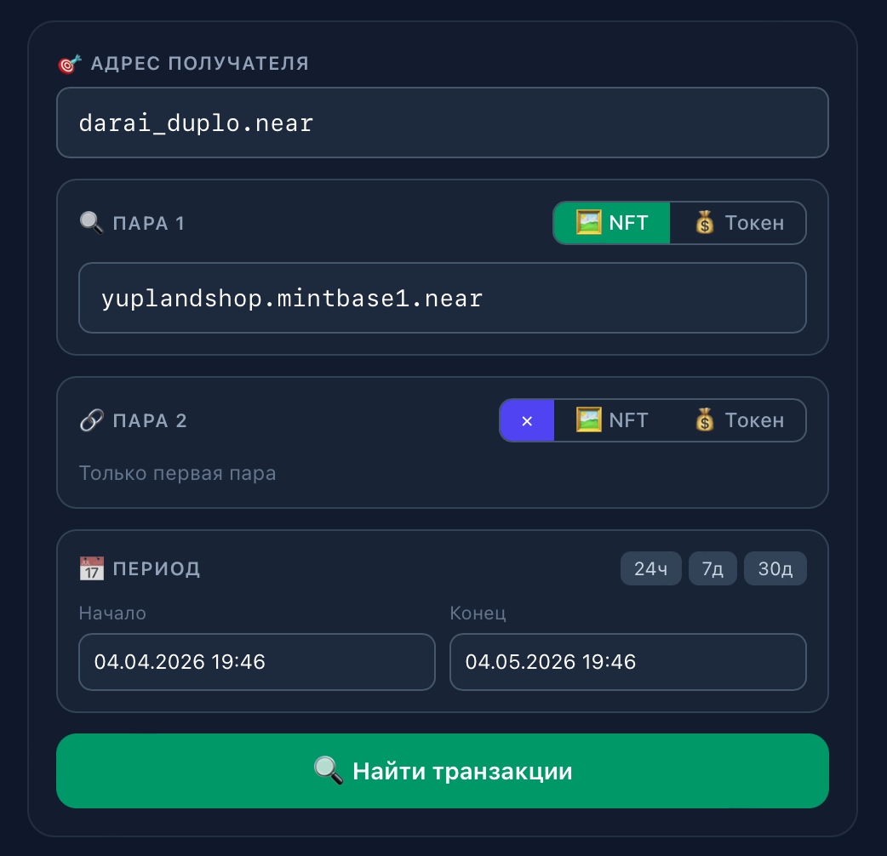
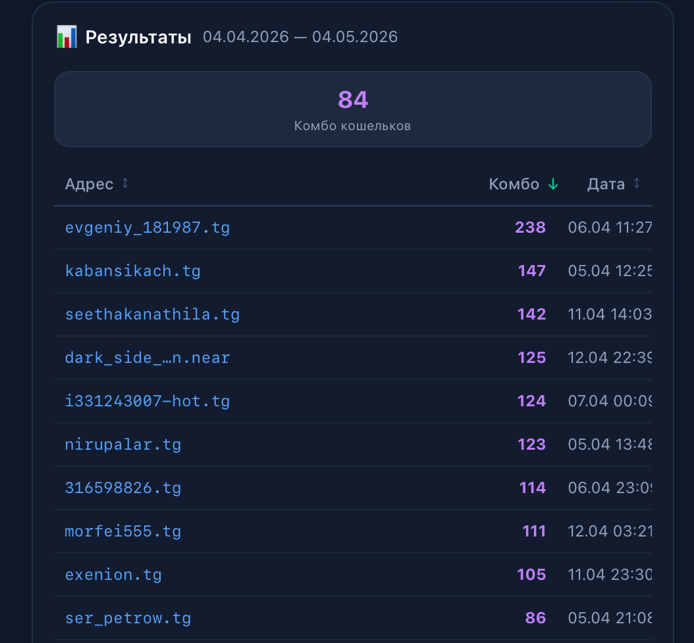
A burn-and-reward engine with two faces, sharing one on-chain wallet and one recipe library. Original game: a custom blockchain parser watches transfers to the Duplo wallet in real time, identifies multi-asset combinations by recipe (NFT + token bundles, time-window logic), computes rewards and maintains a leaderboard. Portal version: the same combo logic but fully automated inside YupLand Portal — players don't send transfers manually; the portal triggers burn → combo check → reward inside its daily loot loop. Both versions feed the same wallet, putting supply out of circulation across the whole ecosystem.
Players send NFTs and tokens to the Duplo wallet manually. A custom parser identifies valid combinations in real time, computes rewards and maintains a leaderboard.
Same combo logic, no manual transfers. YupLand Portal runs burn → combo check → reward inside its daily loot loop. No rating — designed for breadth, not competition.
Detects bundles of NFTs + tokens by recipe. Time-window logic, configurable reward tables, multi-chain (NEAR + TON).
Both versions feed the same Duplo wallet — a fun supply sink at scale. Players take NFTs and tokens out of circulation because they want to, not because they have to.
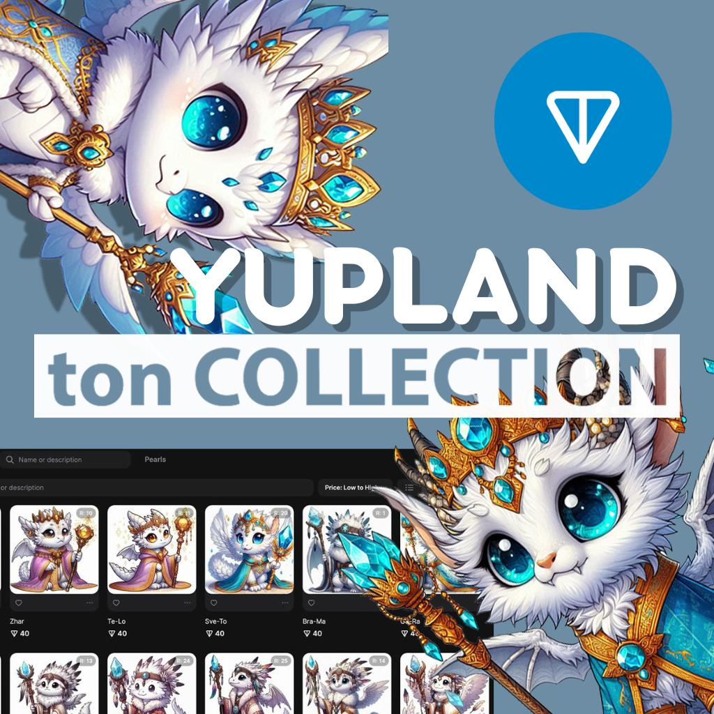
A full pipeline for launching custom NFT collections on NEAR and TON — from art assembly to on-chain deploy. Trait generator from art components, smart contract templates, custom token tooling and a mint flow integrated with launch landings. Reused across multiple collection launches by the studio.
Every NFT collection launch hits the same pipeline: assemble traits into final images, deploy a smart contract, build a mint UI, wire it into a landing. Doing it from scratch each time burns weeks per launch. The studio needed a reusable pipeline that takes art components in and delivers a live mint on the other end.
An end-to-end pipeline: a trait generator stitches art components into final NFT images by rarity rules, a smart contract template handles NEAR or TON deployment, custom token tooling manages token-side configuration, and the mint flow is integrated with launch landings as a drop-in component. Art in → button → live mint out.
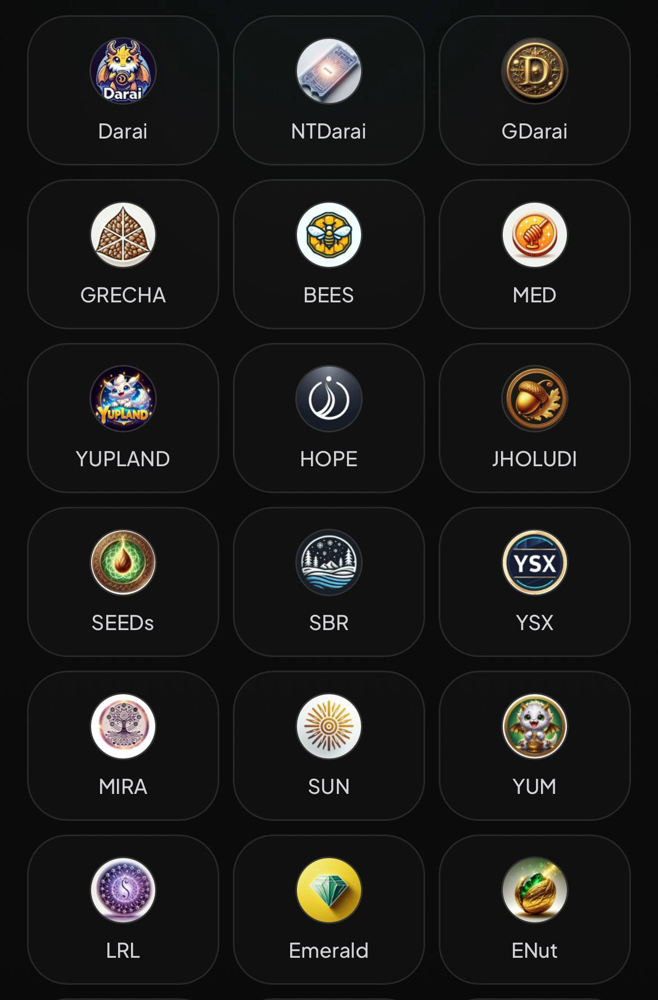
Combines art components into final NFT images by rarity rules. Same input layer feeds both chains.
NEAR and TON contract templates plugged into the same pipeline — one configuration, two deploys.
Token-side configuration managed alongside contract deploy — collection metadata, supply, royalties.
Drop-in mint component for the launch landing — wallet connect, mint button, supply counter, all wired in.
Art → contract → mint, multi-chain, reused across multiple launches by the studio.
A production Telegram bot that generates stylized personal images while keeping the user's identity recognizable across every generation.
Preserve a recognizable face through heavy stylization, keep generation costs under control and handle bursty async load — all shipped fast.
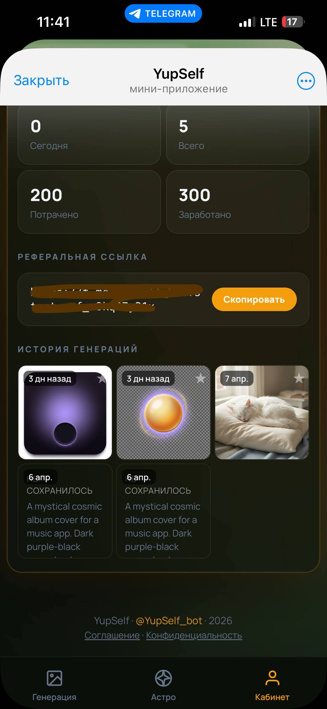
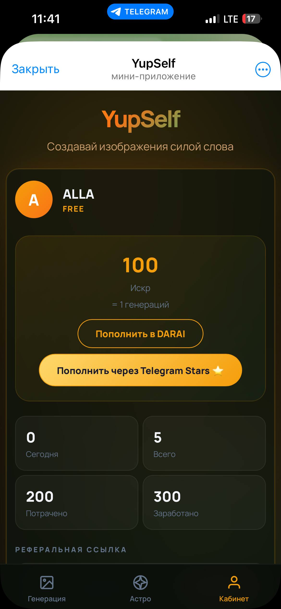
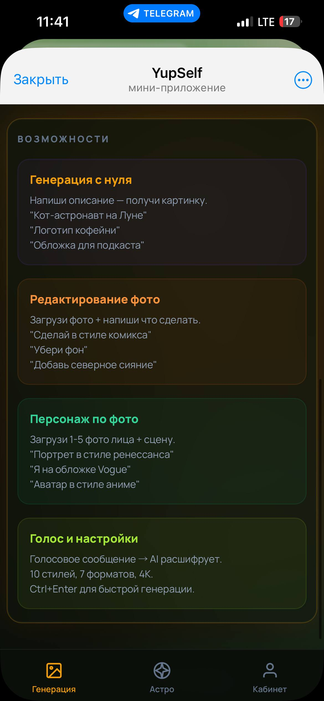
A multimodal input layer, dual-API failover for cost optimization, an async job architecture and crypto payments — live in 10 days.
We pick the right tool for each problem and integrate up to 10+ providers in a single pipeline with graceful fallback.
We're not a freelance marketplace or a generic dev shop. Everyone on the team built a product in our own Yupland Web3 ecosystem — so we treat client work with the same ownership we treat our own.
Founder of YupCode and Yupland, concept designer of the ecosystem, public face of the team.
Built AI Music Platform and AI Image Bot. Co-author of YupSelf. Multimodal pipelines and Mini Apps.
Telegram bots, NFT infrastructure, P2E games, blockchain parsing. AI Content Factory creator.
Game design and economy across the ecosystem. Co-author of YupSelf AI avatars.
Creator of YupLand Portal with DEX, YupPay, YupXBet, YupJarvis and other services.
NEAR indexers, smart contracts, NFT Sender (#1 distribution on NEAR), marketplace infrastructure.
Built YupDar as a non-developer book author via Claude Code. Living proof that vibe-coding ships products.
Designers, translators and domain experts we bring in when project scope requires it.
Predictable process, predictable outputs. No surprises, no scope creep without a written change.
We read your brief, ask sharp questions, push back on weak assumptions. You leave with a realistic scope, timeline and price. Free.
Fixed deliverables, fixed timeline. Or hourly with a weekly cap if scope is fluid. Staged payments by milestone.
You see progress every day in your preferred channel (Slack, Telegram, email). No "find out two days before delivery that nothing is ready."
Deploy-ready code, env notes, rollback playbook, 30-minute walkthrough call. Your team can extend or take over without us.
Send a 2–3 sentence brief and we'll come back with a realistic scope, timeline and price within 24 hours. Discovery call is free.
Book a 30-min discovery call →